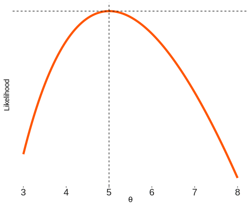
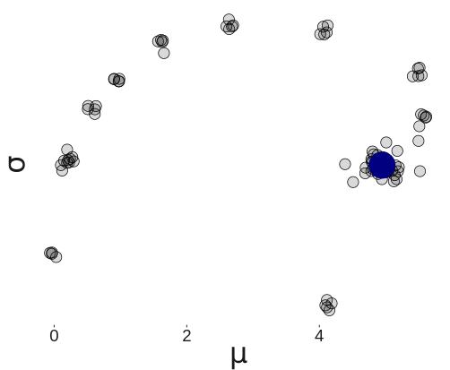
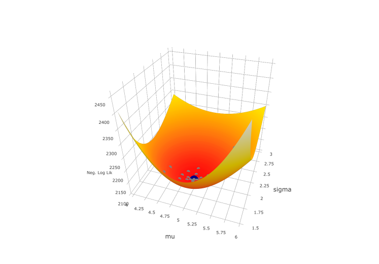

Appendix
NOTE EVAL AND CACHE FALSE UNTIL WE GET TO THIS SECTION.
Maximum Likelihood Review
This is a very brief refresher on maximum likelihood estimation using a standard regression approach as an example, and more or less assumes one hasn’t tried to roll their own such function in a programming environment before. Given the likelihood’s role in Bayesian estimation and statistics in general, and the ties between specific Bayesian results and maximum likelihood estimates one typically comes across, one should be conceptually comfortable with some basic likelihood estimation.
In the standard model setting we attempt to find parameters \(\theta\) that will maximize the probability of the data we actually observe. We’ll start with an observed random target vector \(y\) with \(i...N\) independent and identically distributed observations and some data-generating process underlying it \(f(\cdot|\theta)\). We are interested in estimating the model parameter(s), \(\theta\), that would make the data most likely to have occurred. The probability density function for \(y\) given some particular estimate for the parameters can be noted as \(f(y_i|\theta)\). The joint probability distribution of the (independent) observations given those parameters, \(f(y_i|\theta)\), is the product of the individual densities, and is our likelihood function. We can write it out generally as: 
\[\mathcal{L}(\theta) = \prod_{i=1}^N f(y_i|\theta)\]
Thus the likelihood for one set of parameter estimates given a fixed set of data y, is equal to the probability of the data given those (fixed) estimates. Furthermore we can compare one set, \(\mathcal{L}(\theta_A)\), to that of another, \(\mathcal{L}(\theta_B)\), and whichever produces the greater likelihood would be the preferred set of estimates. We can get a sense of this with the graph to the right, based on a single parameter, Poisson distributed variable. The data is drawn from a variable with mean \(\theta=5\). We note the calculated likelihood increases as we estimate values for \(\theta\) closer to \(5\).
For computational reasons we instead work with the sum of the natural log probabilities52, and thus the log likelihood:
\[\ln\mathcal{L}(\theta) = \sum_{i=1}^N \ln[f(y_i|\theta)]\]
Concretely, we calculate a log likelihood for each observation and then sum them for the total likelihood for parameter(s) \(\theta\).
The likelihood function incorporates our assumption about the sampling distribution of the data given some estimate for the parameters. It can take on many forms and be notably complex depending on the model in question, but once specified, we can use any number of optimization approaches to find the estimates of the parameter that make the data most likely. As an example, for a normally distributed variable of interest we can write the log likelihood as follows:
\[\ln\mathcal{L}(\theta) = \sum_{i=1}^N \ln[\frac{1}{\sqrt{2\pi\sigma^2}}\exp(-\frac{(y-\mu)^2}{2\sigma^2})]\]
Example
In the following we will demonstrate the maximum likelihood approach to estimation for a simple setting incorporating a normal distribution where we estimate the mean and variance/sd for a set of values \(y\)53. First the data is created, and then we create the function that will compute the log likelihood. Using the built in R distributions54 makes it fairly straightforward to create our own likelihood function and feed it into an optimization function to find the best parameters. We will set things up to work with the bbmle package, which has some nice summary functionality and other features. However, one should take a glance at optim and the other underlying functions that do the work.
# for replication
set.seed(1234)
# create the data
y = rnorm(1000, mean=5, sd=2)
startvals = c(0, 1)
# the log likelihood function
LL = function(mu=startvals[1], sigma=startvals[2]){
ll = -sum(dnorm(y, mean=mu, sd=sigma, log=T))
message(paste(mu, sigma, ll))
ll
}The LL function takes starting points for the parameters as arguments, in this case we call them \(\mu\) and \(\sigma\), which will be set to 0 and 1 respectively. Only the first line (ll = -sum…) is actually necessary, and we use dnorm to get the density for each point55. Since this optimizer is by default minimization, we reverse the sign of the sum so as to minimize the negative log likelihood, which is the same as maximizing the likelihood. Note that the bit of other code just allows you to see the estimates as the optimization procedure searches for the best values. I do not show that here but you’ll see it in your console.
We are now ready to obtain maximum likelihood estimates for the parameters. For the mle2 function we will need the function we’ve created, plus other inputs related to that function or the underlying optimizing function used (by default optim). In this case we will use an optimization procedure that will allow us to set a lower bound for \(\sigma\). This isn’t strictly necessary, but otherwise you would get get warnings and possibly lack of convergence if negative estimates for \(\sigma\) were allowed56
library(bbmle)
# using optim, and L-BFGS-B so as to contrain sigma to be positive by setting
# the lower bound at zero
mlnorm = mle2(LL, method="L-BFGS-B", lower=c(sigma=0))
mlnorm
Call:
mle2(minuslogl = LL, method = "L-BFGS-B", lower = c(sigma = 0))
Coefficients:
mu sigma
4.946809 1.993676
Log-likelihood: -2108.92 # compare to an intercept only regression model
summary(lm(y~1))
Call:
lm(formula = y ~ 1)
Residuals:
Min 1Q Median 3Q Max
-6.7389 -1.2933 -0.0264 1.2848 6.4450
Coefficients:
Estimate Std. Error t value Pr(>|t|)
(Intercept) 4.94681 0.06308 78.42 <2e-16 ***
---
Signif. codes: 0 '***' 0.001 '**' 0.01 '*' 0.05 '.' 0.1 ' ' 1
Residual standard error: 1.995 on 999 degrees of freedomWe can see that the ML estimates are the same as the intercept only model estimates57, which given the sample size are close to the true values.
In terms of the parameters we estimate, in the typical case of two or more parameters we can think of a likelihood surface that represents the possible likelihood values given any particular set of estimates. Given some starting point, the optimization procedure then travels along the surface looking for a minimum/maximum point58. For simpler settings such as this, we can visualize the likelihood surface and its minimum point. The optimizer travels along this surface until it finds a minimum. I also plot the the path of the optimizer from a top down view. The large blue dot noted represents the minimum negative log likelihood.

A bit of jitter was added to the points to better see what’s going on.

Please note that there are many other considerations in optimization completely ignored here, but for our purposes and the audience for which this is intended, we do not want to lose sight of the forest for the trees. We now move next to a slightly more complicated regression example.
Linear Model
In the standard regression context, our expected value for the target variable comes from our linear predictor, i.e. the weighted combination of our explanatory variables, and we estimate the regression weights/coefficients and possibly other relevant parameters. We can expand our previous example to the standard linear model without too much change. In this case we estimate a mean for each observation, but otherwise assume the variance is constant across observations. Again we first construct some data so that we know exactly what to expect, then write out the likelihood function with starting parameters. As we need to estimate our intercept and coefficient for the X predictor (collectively referred to as \(\beta\)), we can can think of our likelihood explicitly as before:
\[\ln\mathcal{L}(\beta, \sigma^2) = \sum_{i=1}^N \ln[\frac{1}{\sqrt{2\pi\sigma^2}}\exp(-\frac{(y-X\beta)^2}{2\sigma^2})]\]
# for replication
set.seed(1234)
# predictor
X = rnorm(1000)
# coefficients for intercept and predictor
beta = c(5,2)
# add intercept to X and create y with some noise
y = cbind(1,X)%*%beta + rnorm(1000, sd=2.5)
regLL = function(sigma=1, Int=0, b1=0){
coefs = c(Int, b1)
mu = cbind(1,X)%*%coefs
ll = -sum(dnorm(y, mean=mu, sd=sigma, log=T))
message(paste(sigma, Int, b1, ll))
ll
}
library(bbmle)
mlopt = mle2(regLL, method="L-BFGS-B", lower=c(sigma=0))
summary(mlopt)Maximum likelihood estimation
Call:
mle2(minuslogl = regLL, method = "L-BFGS-B", lower = c(sigma = 0))
Coefficients:
Estimate Std. Error z value Pr(z)
sigma 2.447823 0.054735 44.721 < 2.2e-16 ***
Int 5.039976 0.077435 65.087 < 2.2e-16 ***
b1 2.139284 0.077652 27.549 < 2.2e-16 ***
---
Signif. codes: 0 '***' 0.001 '**' 0.01 '*' 0.05 '.' 0.1 ' ' 1
-2 log L: 4628.273 # plot(profile(mlopt), absVal=F)
modlm = lm(y~X)
summary(modlm)
Call:
lm(formula = y ~ X)
Residuals:
Min 1Q Median 3Q Max
-7.9152 -1.6097 0.0363 1.6343 7.6711
Coefficients:
Estimate Std. Error t value Pr(>|t|)
(Intercept) 5.03998 0.07751 65.02 <2e-16 ***
X 2.13928 0.07773 27.52 <2e-16 ***
---
Signif. codes: 0 '***' 0.001 '**' 0.01 '*' 0.05 '.' 0.1 ' ' 1
Residual standard error: 2.45 on 998 degrees of freedom
Multiple R-squared: 0.4315, Adjusted R-squared: 0.4309
F-statistic: 757.5 on 1 and 998 DF, p-value: < 2.2e-16-2*logLik(modlm)'log Lik.' 4628.273 (df=3)
As before, our estimates and final log likelihood value are about where they should be, and reflect the lm output, as the OLS estimates are the maximum likelihood estimates. The visualization becomes more difficult beyond two parameters, but we can examine slices similar to the previous plot.
To move to generalized linear models, very little changes of the process outside of the distribution assumed and that we are typically modeling a function of the target variable (e.g. \(\log(y)=X\beta; \mu = e^{X\beta}\)).
Binomial Likelihood Example
This regards the example seen in the early part of the document with the hands-on example.
x1 = rbinom(1000, size=10, p=.5)
x2 = rbinom(1000, size=10, p=.85)
binomLL = function(theta, x) {
-sum(dbinom(x, size=10, p=theta, log=T))
}
optimize(binomLL, x=x1, lower=0, upper=1); mean(x1)$minimum
[1] 0.5043001
$objective
[1] 1902.557[1] 5.043optimize(binomLL, x=x2, lower=0, upper=1); mean(x2)$minimum
[1] 0.8568963
$objective
[1] 1438.786[1] 8.569Modeling Languages
I will talk only briefly about a couple of the modeling language options available, as you will have to make your own choice among many.
Bugs
BUGS (Lunn et al. 2012) (Bayesian inference Using Gibbs Sampling) is perhaps the most widely known and used Bayesian modeling language, as it has been around for over 25 years at this point. It is implemented via OpenBUGS and freely available for download59. It even has a GUI interface if such a thing is desired.
JAGS
JAGS (Just Another Gibbs Sampler) is a more recent dialect of the BUGS language, and is also free to use. It offers some technical and modeling advantages to OpenBUGs, but much of the code translates directly from one to the other.
Stan
Stan is a relative newcomer to Bayesian modeling languages, having only been out a couple years now. It uses a different estimation procedure than the BUGS language and this makes it more flexible and perhaps better behaved for many types of models. It actually compiles Stan code to C++, and so can be very fast as well. I personally prefer it as I find it more clear in its expression, but your mileage may vary.
R
R has many modeling packages devoted to Bayesian analysis such that there is a Task View specific to the topic. Most of them are even specific to the implementation of a certain type of analysis60. So not only can you do everything within R and take advantage of the power of those languages, you can then use Bayesian specific R packages on the results. For standard and even some complex models I would suggest using the rstanarm or brms packages as a way to stick to the usual R modeling style, unless you have a notably complicated model, at wich point you can use rstan.
General Statistical Packages
The general statistical languages such as SAS, SPSS, and Stata were generally very late to the Bayesian game, even for implementations of Bayesian versions of commonly used models. SAS started a few years ago with experimental and extremely limited capability, and Stata only very recently (but there is StataStan). SPSS doesn’t seem to have much capability in this area, much like a lot of other things. Others still seem to be lacking as well. In general, I wouldn’t recommend these packages for Bayesian analysis, except as an interface to one of the Bayesian specific languages, assuming they have the capability.
Other Programming Languages
Python has functionality via modules such as PyMC, and Stan has a Python implementation, PyStan. Julia has some functionality similar in implementation to Matlab’s, which one may also consider, and both have Stan ports as well. And with any programming language that you might use for statistical analysis, you could certainly do a lot of it by hand if you have the time, though you should exhaust tested implementations first.
Summary
In short, you have plenty of options. I would suggest starting with a Bayesian programming language or using that language within your chosen statistical environment or package. This gives you the most modeling flexibility, choice, and opportunity to learn.
BUGS Example
The following provides a BUGS example of the primary model used in the document. The applicable code for the data set up is in the Example: Linear Regression Model section of the document. The model matrix X must be a matrix class object. Next we setup a BUGS data list as we did with Stan, and create a text file that contains the model code. Note that the data list comprises simple characters which are used to look for objects of those names that are in the environment. Also, I use cat with sink so that I don’t have to go to a separate text editor to create the file.
One of the big differences between BUGS and other languages is its use of the precision parameter \(\frac{1}{\sigma^2}\), the inverse variance, usually denoted as \(\tau\). While there were some computational niceties to be had in doing so, even the authors admit this was not a good decision in retrospect. Prepare to have that issue come up from time to time when you inevitably forget. Comments and assignments are the same as R, and distributions noted with \(\sim\).
##################
### BUGS setup ###
##################
bugsdat = list('y', 'X', 'N', 'K')
# This will create a file, lmbugs.txt that will subsequently be called
sink('data/lmbugs.txt')
cat(
'model {
for (n in 1:N){
mu[n] <- beta[1]*X[n,1] + beta[2]*X[n,2] + beta[3]*X[n,3] + beta[4]*X[n,4]
y[n] ~ dnorm(mu[n], inv.sigma.sq)
}
for (k in 1:K){
beta[k] ~ dnorm(0, .001) # prior for reg coefs
}
# Half-cauchy as in Gelman 2006
# Scale parameter is 5, so precision of z = 1/5^2 = 0.04
sigma.y <- abs(z)/sqrt(chSq) # prior for sigma; cauchy = normal/sqrt(chi^2)
z ~ dnorm(0, .04)I(0,)
chSq ~ dgamma(0.5, 0.5) # chi^2 with 1 d.f.
inv.sigma.sq <- pow(sigma.y, -2) # precision
# sigma.y ~ dgamma(.001, .001) # prior for sigma; a typical approach used.
}'
)
sink()
# explicitly provided initial values not necessary, but one can specify them
# as follows, and you may have problems with variance parameters if you don't.
# Note also that sigma.y is unnecesary if using the half-cauchy approach as
# it is defined based on other values.
# inits <- list(list(beta=rep(0,4), sigma.y=runif(1,0,10)),
# list(beta=rep(0,4), sigma.y=runif(1,0,10)),
# list(beta=rep(0,4), sigma.y=runif(1,0,10)))
# parameters <- c('beta', 'sigma.y')Now we are ready to run the model. You’ll want to examine the help file for the bugs function for more information. In addition, depending on your setup you may need to set the working directory and other options. Note that n.thin argument is used differently than other packages. One specifies the n posterior draws (per chain) you to keep want as n.iter-n.burnin. The thinned samples aren’t stored. Compare this to other packages where n.iter is the total before thinning and including burn-in, and n.keep is (n.iter-n.burnin)/n.thin. With the function used here, n.keep is the same, but as far as arguments your you’ll want to think of n.iter as the number of posterior draws after thinning. So the following all produce 1000 posterior draws in R2OpenBUGS:
| n.iter=3000, | n.thin=1, | n.burnin=2000 |
| n.iter=3000, | n.thin=10, | n.burnin=2000 |
| n.iter=3000, | n.thin=100, | n.burnin=2000 |
In other packages, with those arguments you’d end up with 1000, 100, and 10 posterior draws.
#####################
### Run the model ###
#####################
lmbugs <- bugs(bugsdat, inits=NULL, parameters=c('beta', 'sigma.y'),
model.file='lmbugs.txt', n.chains=3, n.iter=3000, n.thin=10,
n.burnin=2000)Now we are ready for the results, which will be the same as what we saw with Stan. In addition to the usual output, you get the deviance information criterion as a potential means for model comparison.
## lmbugs$summary mean sd 2.5% 50% 97.5% Rhat n.eff
beta[1] 4.900 0.127 4.648 4.903 5.143 1.001 2400
beta[2] 0.084 0.130 -0.166 0.084 0.336 1.001 3000
beta[3] -1.468 0.125 -1.721 -1.470 -1.224 1.001 2100
beta[4] 0.824 0.121 0.587 0.827 1.053 1.001 3000
sigma.y 2.028 0.092 1.860 2.024 2.218 1.001 3000
deviance 1063.611 3.148 1059.000 1063.000 1071.000 1.001 3000The usual model diagnostics are available with conversion of the results to an object the package can work with. Figures are not shown, but they are the typical traceplots and density plots.
lmbugscoda = as.mcmc.list(lmbugs)
traceplot(lmbugscoda)
densityplot(lmbugscoda)
plot(lmbugscoda)
corrplot:::corrplot(cor(lmbugscoda[[2]])) # noticeably better than levelplotJAGS Example
The following shows how to run the regression model presented earlier in the document via JAGS. Once you have the data set up as before, the data list is done in the same fashion as with BUGS. The code itself is mostly identical, save for the use of T instead of I for truncation. JAGS, being a BUGS dialect, also uses the precision parameter in lieu of the variance.
jagsdat = list('y'=y, 'X'=X, 'N'=N, 'K'=K)
sink('data/lmjags.txt')
cat(
'model {
for (n in 1:N){
mu[n] <- beta[1]*X[n,1] + beta[2]*X[n,2] + beta[3]*X[n,3] + beta[4]*X[n,4]
y[n] ~ dnorm(mu[n], inv.sigma.sq)
}
for (k in 1:K){
beta[k] ~ dnorm(0, .001)
}
# Half-cauchy as in Gelman 2006
# Scale parameter is 5, so precision of z = 1/5^2 = 0.04
sigma.y <- z/sqrt(chSq)
z ~ dnorm(0, .04)T(0,)
chSq ~ dgamma(0.5, 0.5)
inv.sigma.sq <- pow(sigma.y, -2)
}'
)
sink()
# explicitly provided initial values not necessary, but can specify as follows
# inits <- function(){
# list(beta=rep(0,4), sigma.y=runif(1,0,10))
# }
parameters <- c('beta', 'sigma.y')With everything set, we can now run the model. With JAGS, we have what might be called an initialization stage that sets the model up and runs through the warm-up period, after which we can then flexibly sample from the posterior via the coda.samples function.
library(rjags); library(coda)
lmjagsmod = jags.model(file='data/lmjags.txt', data=jagsdat, # inits=inits
n.chains=3, n.adapt=2000)
lmjags = coda.samples(lmjagsmod, c('beta', 'sigma.y'), n.iter=10000,
thin=10, n.chains=3)Now we have a model identical to the others, and can summarize the posterior distribution in similar fashion.
summary(lmjags)
Iterations = 2010:12000
Thinning interval = 10
Number of chains = 3
Sample size per chain = 1000
1. Empirical mean and standard deviation for each variable,
plus standard error of the mean:
Mean SD Naive SE Time-series SE
beta[1] 4.89499 0.12834 0.002343 0.002342
beta[2] 0.08122 0.13080 0.002388 0.002260
beta[3] -1.46928 0.12534 0.002288 0.002289
beta[4] 0.81466 0.12310 0.002247 0.002248
sigma.y 2.02802 0.09398 0.001716 0.001716
2. Quantiles for each variable:
2.5% 25% 50% 75% 97.5%
beta[1] 4.6440 4.810914 4.89334 4.9827 5.1490
beta[2] -0.1737 -0.008208 0.08151 0.1696 0.3361
beta[3] -1.7133 -1.553251 -1.46970 -1.3849 -1.2200
beta[4] 0.5748 0.732970 0.81730 0.8961 1.0552
sigma.y 1.8568 1.962498 2.02369 2.0892 2.2188coda::effectiveSize(lmjags) beta[1] beta[2] beta[3] beta[4] sigma.y
3000.000 3453.261 3000.000 3000.000 3000.000 Metropolis Hastings Example
Next depicted is a random walk Metropolis-Hastings algorithm using the the data and model from prior sections of the document. I had several texts open while cobbling together this code such as Gelman et al. (2013), and some oriented towards the social sciences by Gill (2008), Jackman (2009), and Lynch (2007) etc. Some parts of the code reflect information and code examples found therein, and follows Lynch’s code a bit more.
The primary functions that we need to specify regard the posterior distribution61, an update step for beta coefficients, and an update step for the variance estimate.
# posterior function
post = function(x, y, b, s2){
# Args: X is the model matrix; y the target vector; b and s2 the parameters
# to be esitmated
beta = b
sigma = sqrt(s2)
sigma2 = s2
mu = X %*% beta
# priors are b0 ~ N(0, sd=10), sigma2 ~ invGamma(.001, .001)
priorbvarinv = diag(1/100, 4)
prioralpha = priorbeta = .001
if(is.nan(sigma) | sigma<=0){ # scale parameter must be positive
return(-Inf)
}
# Note that you will not find the exact same presentation across texts and
# other media for the log posterior in this conjugate setting. In the end
# they are conceputally still (log) prior + (log) likelihood (See commented 'else')
else {
-.5*nrow(X)*log(sigma2) - (.5*(1/sigma2) * (crossprod(y-mu))) +
-.5*ncol(X)*log(sigma2) - (.5*(1/sigma2) * (t(beta)%*%priorbvarinv%*%beta)) +
-(prioralpha+1)*log(sigma2) + log(sigma2) - priorbeta/sigma2
}
# else {
# ll = mvtnorm::dmvnorm(y, mean=mu, sigma=diag(sigma2, length(y)), log=T)
# priorb = mvtnorm::dmvnorm(beta, mean=rep(0, length(beta)), sigma=diag(100, length(beta)), log=T)
# priors2 = dgamma(1/sigma2, prioralpha, priorbeta, log=T)
# logposterior = ll + priorb + priors2
# logposterior
# }
}
# update step for regression coefficients
updatereg = function(i, x, y, b, s2){
# Args are the same as above but with additional i iterator argument.
b[i,] = MASS::mvrnorm(1, mu=b[i-1,], Sigma=bvarscale) # proposal/jumping distribution
# Compare to past- does it increase the posterior probability?
postdiff = post(x=x, y=y, b=b[i,], s2=s2[i-1]) -
post(x=x, y=y, b=b[i-1,], s2=s2[i-1])
# Acceptance phase
unidraw = runif(1)
accept = unidraw < min(exp(postdiff), 1) # accept if so
if(accept) b[i,]
else b[i-1,]
}
# update step for sigma2
updates2 = function(i, x, y, b, s2){
s2candidate = rnorm(1, s2[i-1], sd=sigmascale)
if(s2candidate < 0) {
accept = FALSE
}
else {
s2diff = post(x=x, y=y, b=b[i,], s2=s2candidate) -
post(x=x, y=y, b=b[i,], s2=s2[i-1])
unidraw = runif(1)
accept = unidraw < min(exp(s2diff), 1)
}
ifelse(accept, s2candidate, s2[i-1])
}Now we can set things up for the MCMC chain62. Aside from the typical MCMC setup and initializing the parameter matrices to hold the draws from the posterior, we also require scale parameters to use for the jumping/proposal distribution.
# Setup, starting values etc.
nsim = 12000
burnin = 2000
thin = 10
b = matrix(0, nsim, ncol(X)) # initialize beta update matrix
s2 = rep(1, nsim) # initialize sigma vector
# For the following this c term comes from BDA3 12.2 and will produce an
# acceptance rate of .44 in 1 dimension and declining from there to about
# .23 in high dimensions. For the sigmascale, the magic number comes from
# starting with a value of one and fiddling from there to get around .44.
c = 2.4/sqrt(ncol(b))
bvar = vcov(lm(y~., data.frame(X[,-1])))
bvarscale = bvar * c^2
sigmascale = .9We can now run and summarize the model with tools from the coda package.
# Run
for(i in 2:nsim){
b[i,] = updatereg(i=i, y=y, x=X, b=b, s2=s2)
s2[i] = updates2(i=i, y=y, x=X, b=b, s2=s2)
}
# calculate acceptance rates
baccrate = mean(diff(b[(burnin+1):nsim,]) != 0)
s2accrate = mean(diff(s2[(burnin+1):nsim]) != 0)
baccrate[1] 0.2970297s2accrate[1] 0.4288429# get final chain
library(coda)
bfinal = as.mcmc(b[seq(burnin+1, nsim, by=thin),])
s2final = as.mcmc(s2[seq(burnin+1, nsim, by=thin)])
# get summaries; compare to lm and stan
summary(bfinal); summary(s2final)
Iterations = 1:1000
Thinning interval = 1
Number of chains = 1
Sample size per chain = 1000
1. Empirical mean and standard deviation for each variable,
plus standard error of the mean:
Mean SD Naive SE Time-series SE
[1,] 4.89475 0.1252 0.003958 0.005070
[2,] 0.08252 0.1299 0.004109 0.004922
[3,] -1.46055 0.1202 0.003801 0.004599
[4,] 0.82669 0.1221 0.003861 0.004666
2. Quantiles for each variable:
2.5% 25% 50% 75% 97.5%
var1 4.6543 4.809621 4.8940 4.9764 5.1497
var2 -0.1662 -0.007982 0.0776 0.1723 0.3337
var3 -1.6851 -1.545646 -1.4612 -1.3806 -1.2203
var4 0.6107 0.741037 0.8217 0.9085 1.0756
Iterations = 1:1000
Thinning interval = 1
Number of chains = 1
Sample size per chain = 1000
1. Empirical mean and standard deviation for each variable,
plus standard error of the mean:
Mean SD Naive SE Time-series SE
4.07995 0.37404 0.01183 0.01183
2. Quantiles for each variable:
2.5% 25% 50% 75% 97.5%
3.382 3.827 4.060 4.308 4.904 round(c(coef(modlm), summary(modlm)$sigma^2), 3)(Intercept) X1 X2 X3
4.898 0.084 -1.469 0.820 4.084 Here is the previous Stan fit for comparison.
print(fit, digits=3, prob=c(.025,.5,.975))Inference for Stan model: stanmodelcode.
3 chains, each with iter=12000; warmup=2000; thin=10;
post-warmup draws per chain=1000, total post-warmup draws=3000.
mean se_mean sd 2.5% 50% 97.5% n_eff Rhat
beta[1] 4.894 0.002 0.132 4.630 4.896 5.144 3000 1.001
beta[2] 0.085 0.002 0.131 -0.178 0.086 0.340 3000 1.001
beta[3] -1.471 0.002 0.127 -1.716 -1.471 -1.221 2795 1.000
beta[4] 0.819 0.002 0.121 0.576 0.820 1.057 3000 0.999
sigma 2.032 0.002 0.091 1.862 2.029 2.215 2997 0.999
lp__ -301.008 0.029 1.579 -304.855 -300.700 -298.853 3000 1.000
Samples were drawn using NUTS(diag_e) at Sun May 18 14:01:52 2014.
For each parameter, n_eff is a crude measure of effective sample size,
and Rhat is the potential scale reduction factor on split chains (at
convergence, Rhat=1).Hamiltonian Monte Carlo Example
The following demonstrates Hamiltonian Monte Carlo, the technique that Stan uses, and which is a different estimation approach than Gibbs sampler in BUGS/JAGS. If you are interested in the details enough to be reading this, I highly recommend Betancourt’s conceptual introduction to HMC. This example still assumes the data we used in this document, and is largely based on the code in the appendix of Gelman et al. (2013).
First we start with the functions.
# Log posterior function
log_p_th = function(X, y, th){
# Args: X is the model matrix; y the target vector; th is the current
# parameter estimates.
beta = th[-length(th)] # reg coefs to be estimated
sigma = th[length(th)] # sigma to be estimated
sigma2 = sigma^2
mu = X %*% beta
# priors are b0 ~ N(0, sd=10), sigma2 ~ invGamma(.001, .001)
priorbvarinv = diag(1/100, 4)
prioralpha = priorbeta = .001
if(is.nan(sigma) | sigma<=0){ # scale parameter must be positive, so post
return(-Inf) # density is zero if it jumps below zero
}
# log posterior in this conjugate setting. Conceputally it's
# (log) prior + (log) likelihood. (See commented 'else')
else {
-.5*nrow(X)*log(sigma2) - (.5*(1/sigma2) * (crossprod(y-mu))) +
-.5*ncol(X)*log(sigma2) - (.5*(1/sigma2) * (t(beta)%*%priorbvarinv%*%beta)) +
-(prioralpha+1)*log(sigma2) + log(sigma2) - priorbeta/sigma2
}
# else {
# ll = mvtnorm::dmvnorm(y, mean=mu, sigma=diag(sigma2, length(y)), log=T)
# priorb = mvtnorm::dmvnorm(beta, mean=rep(0, length(beta)), sigma=diag(100, length(beta)), log=T)
# priors2 = dgamma(1/sigma2, prioralpha, priorbeta, log=T)
# logposterior = ll + priorb + priors2
# logposterior
# }
}
# numerical gradient function as given in BDA3 p. 602; same args as posterior
gradient_th_numerical = function(X, y, th){
d = length(th)
e = .0001
diffs = numeric(5)
for(k in 1:d){
th_hi = th
th_lo = th
th_hi[k] = th[k] + e
th_lo[k] = th[k] - e
diffs[k] = (log_p_th(X, y, th_hi) - log_p_th(X, y, th_lo)) / (2*e)
}
return(diffs)
}
# single HMC iteration function
hmc_iteration = function(X, y, th, epsilon, L, M){
# Args: epsilon is the stepsize; L is the number of leapfrog steps; epsilon
# and L are drawn randomly at each iteration to explore other areas of the
# posterior (starting with epsilon0 and L0); M is a diagonal mass matrix
# (expressed as a vector), a bit of a magic number in this setting. It regards
# the mass of a particle whose position is represented by theta, and momentum
# by phi. See the sampling section of chapter 1 in the Stan manual for more
# detail.
M_inv = 1/M
d = length(th)
phi = rnorm(d, 0, sqrt(M))
th_old = th
log_p_old = log_p_th(X, y, th) - .5*sum(M_inv*phi^2)
phi = phi + .5*epsilon*gradient_th_numerical(X, y, th)
for (l in 1:L){
th = th + epsilon*M_inv*phi
phi = phi + ifelse(l==L, .5, 1) * epsilon*gradient_th_numerical(X, y, th)
}
# here we get into standard MCMC stuff, jump or not based on a draw from a
# proposal distribution
phi = -phi
log_p_star = log_p_th(X, y, th) - .5*sum(M_inv*phi^2)
r = exp(log_p_star - log_p_old)
if (is.nan(r)) r = 0
p_jump = min(r, 1)
th_new = if(runif(1) < p_jump) th else th_old
return(list(th=th_new, p_jump=p_jump)) # returns estimates and acceptance rate
}
# main HMC function
hmc_run = function(starts, iter, warmup, epsilon_0, L_0, M, X, y){
# Args: starts are starting values; iter is total number of simulations for
# each chain (note chain is based on the dimension of starts); warmup
# determines which of the initial iterations will be ignored for inference
# purposes; edepsilon0 is the baseline stepsize; L0 is the baseline number
# of leapfrog steps; M is the mass vector
chains = nrow(starts)
d = ncol(starts)
sims = array(NA, c(iter, chains, d),
dimnames=list(NULL, NULL, colnames(starts)))
p_jump = matrix(NA, iter, chains)
for(j in 1:chains){
th = starts[j,]
for(t in 1:iter){
epsilon = runif(1, 0, 2*epsilon_0)
L = ceiling(2*L_0*runif(1))
temp = hmc_iteration(X, y, th, epsilon, L, M)
p_jump[t,j] = temp$p_jump
sims[t,j,] = temp$th
th = temp$th
}
}
rstan::monitor(sims, warmup, digits_summary=3)
acc = round(colMeans(p_jump[(warmup+1):iter,]), 3) # acceptance rate
message('Avg acceptance probability for each chain: ',
paste0(acc[1],', ',acc[2]), '\n')
return(list(sims=sims, p_jump=p_jump))
}With the primary functions in place, we set the starting values and choose other settings for for the HMC process. The coefficient starting values are based on random draws from a uniform distribution, while \(\sigma\) is set to a value of one in each case. As in the other examples we’ll have 12000 total draws with warm-up set to 2000. I don’t have any thinning option but that could be added or simply done as part of the coda package preparation.
# Starting values and mcmc settings
parnames = c(paste0('beta[',1:4,']'), 'sigma')
d = length(parnames)
chains = 2
thetastart = t(replicate(chains, c(runif(d-1, -1, 1), 1)))
colnames(thetastart) = parnames
nsim = 12000
wu = 2000
# fiddle with these to get a desirable acceptance rate of around .80. The
# following work well with the document data.
stepsize = .08
nLeap = 10
vars = rep(1, 5)We are now ready to run the model. On my machine and with the above settings, it took about two minutes. Once complete we can use the coda package if desired as we have done before.
# Run the model
M1 = hmc_run(starts=thetastart, iter=nsim, warmup=wu, epsilon_0=stepsize,
L_0=nLeap, M=mass_vector, X=X, y=y)Inference for the input samples (2 chains: each with iter=12000; warmup=2000):
mean se_mean sd 2.5% 25% 50% 75% 97.5% n_eff Rhat
beta[1] 4.900 0.001 0.129 4.648 4.812 4.900 4.987 5.154 12982 1
beta[2] 0.085 0.001 0.130 -0.167 -0.003 0.084 0.172 0.343 12493 1
beta[3] -1.468 0.001 0.126 -1.718 -1.550 -1.469 -1.384 -1.223 12577 1
beta[4] 0.820 0.001 0.121 0.585 0.739 0.821 0.902 1.053 12958 1
sigma 2.017 0.001 0.093 1.848 1.953 2.013 2.077 2.210 11460 1
For each parameter, n_eff is a crude measure of effective sample size,
and Rhat is the potential scale reduction factor on split chains (at
convergence, Rhat=1).Avg acceptance probability for each chain: 0.816, 0.822# str(M1, 1)
# use coda if desired
library(coda)
theta = as.mcmc.list(list(as.mcmc(M1$sims[(wu+1):nsim,1,]),
as.mcmc(M1$sims[(wu+1):nsim,2,])))
summary(theta)
Iterations = 1:10000
Thinning interval = 1
Number of chains = 2
Sample size per chain = 10000
1. Empirical mean and standard deviation for each variable,
plus standard error of the mean:
Mean SD Naive SE Time-series SE
beta[1] 4.89979 0.12902 0.0009123 0.0011355
beta[2] 0.08465 0.13024 0.0009209 0.0011452
beta[3] -1.46839 0.12609 0.0008916 0.0011047
beta[4] 0.82028 0.12074 0.0008537 0.0010613
sigma 2.01700 0.09264 0.0006550 0.0008718
2. Quantiles for each variable:
2.5% 25% 50% 75% 97.5%
beta[1] 4.6480 4.812384 4.9002 4.9870 5.1542
beta[2] -0.1674 -0.002676 0.0838 0.1718 0.3426
beta[3] -1.7181 -1.550100 -1.4690 -1.3844 -1.2234
beta[4] 0.5848 0.739022 0.8208 0.9021 1.0529
sigma 1.8482 1.952584 2.0135 2.0770 2.2100finalest = summary(theta)$statistics[,'Mean']
b = finalest[1:4]
sig = finalest[5]
log_p_th(X, y, finalest) [,1]
[1,] -301.7267Our estimates look pretty good, and inspection of the diagnostics would show good mixing and convergence as well. At this point we can compare it to the Stan output. For the following, I modified the previous Stan code to use the same inverse gamma prior and tweaked the control options for a little bit more similarity, but that’s not necessary.
Inference for Stan model: stanmodelcodeIG.
2 chains, each with iter=12000; warmup=2000; thin=1;
post-warmup draws per chain=10000, total post-warmup draws=20000.
mean se_mean sd 2.5% 50% 97.5% n_eff Rhat
beta[1] 4.894 0.001 0.128 4.641 4.895 5.144 15354 1
beta[2] 0.083 0.001 0.130 -0.172 0.083 0.339 14592 1
beta[3] -1.469 0.001 0.127 -1.717 -1.469 -1.219 13756 1
beta[4] 0.819 0.001 0.121 0.583 0.819 1.055 15600 1
sigma 2.027 0.001 0.092 1.856 2.023 2.219 13883 1
lp__ -301.532 0.018 1.584 -305.432 -301.213 -299.425 8079 1
Samples were drawn using NUTS(diag_e) at Sun Jun 01 21:53:10 2014.
For each parameter, n_eff is a crude measure of effective sample size,
and Rhat is the potential scale reduction factor on split chains (at
convergence, Rhat=1).References
Lunn, David, Chris Jackson, Nicky Best, Andrew Thomas, and David Spiegelhalter. 2012. The BUGS Book: A Practical Introduction to Bayesian Analysis. Boca Raton, FL: Chapman; Hall/CRC.
Gelman, Andrew, John B. Carlin, Hal S. Stern, David B. Dunson, Aki Vehtari, and Donald B. Rubin. 2013. Bayesian Data Analysis. 3rd ed.
Gill, Jeff. 2008. Bayesian Methods : A Social and Behavioral Sciences Approach. Second. Boca Raton: Chapman & Hall/CRC.
Jackman, Simon. 2009. Bayesian Analysis for the Social Sciences. Chichester, UK: Wiley.
Lynch, Scott M. 2007. Introduction to Applied Bayesian Statistics and Estimation for Social Scientists. New York: Springer.
Math refresher on logs: log(A*B) = log(A)+log(B). So summing the log probabilities will result in the same values for \(\theta\), but won’t result in extremely small values that will break our computer.↩
Of course we could just use the sample estimates, but this is for demonstration.↩
Type ?Distributions at the console for some of the basic R distributions available.↩
Much more straightforward than writing the likelihood function as above.↩
An alternative approach would be to work with the log of \(\sigma\) which can take on negative values, and then convert it back to the original scale.↩
Actually there is a difference between the sigma estimates in that OLS estimates are based on a variance estimate divided by \(N-1\) while the MLE estimate has a divisor of \(N\).↩
Which is equivalent to finding the point where the slope of the tangent line to some function, i.e. the derivative, to the surface is zero. The derivative, or gradient in the case of multiple parameters, of the likelihood function with respect to the parameters is known as the score function.↩
You might come across a previous incarnation, WinBugs, but it is no longer being developed.↩
Many of these packages, if not all of them will be less flexible in model specification compared to implementing the aforementioned languages directly, or using the R interface to those languages. What’s more, R has interfaces to the previous language engines via the packages R2OpenBUGS and BRugs, rjags, and rstan, rstan_arm brms, and many others.↩
Assuming normal for \(\beta\) coefficients, inverse gamma on \(\sigma^2\).↩
This code regards only one chain, though a simple loop or any number of other approaches would easily extend it to two or more.↩